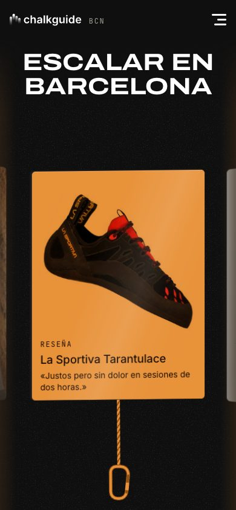

Qué mirar. El banner aparece en idle tras la carga (aquí, 600 ms), fijo abajo, sin fondo oscuro y sin bloquear nada. En 390 tapa la cuerda del hero, nunca la tarjeta (LCP). Mientras está abierto, el final de la página gana un hueco igual a su alto: newsletter y pie se pueden subir por encima. El dock (D45) vive arriba y no choca.
¿Por dónde empiezas?
Elegir rocódromo
Primer pie de gato
Leer el blog
Blog
Más relleno para que haya scroll: el banner sigue ahí al bajar, porque desplazarse no es aceptar. Solo se cierra con «Aceptar», «Rechazar» o guardando desde «Configurar».